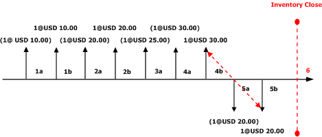
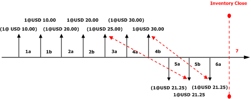
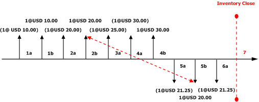

LIFO with physical value and marking
Last in, First out (LIFO) is an inventory model in which the last (newest) receipts are issued first. Issues from inventory are settled against the last receipts into inventory based on the date of the inventory transaction.
In the Last in, First out (LIFO) inventory model, the last (newest) receipts are issued first. Issues from inventory are settled against the last receipts into inventory, based on the date of the inventory transaction. When you use LIFO, you don't have to use the LIFO rule. Instead you can mark inventory transactions so that a specific item issue is settled against a specific receipt. We recommend a periodic inventory closing when you use the LIFO inventory model.
The following examples show the effect of using LIFO in three configurations:
- LIFO without the Include physical value option
- LIFO with the Include physical value option
- LIFO with marking
LIFO without the Include physical value option
In this example, the item model group isn't marked to include physical value. The illustration that follows shows these transactions:
- 1a. Inventory physical receipt for a quantity of 1 at a cost of USD 10.00 each.
- 1b. Inventory financial receipt for a quantity of 1 at a cost of USD 10.00 each.
- 2a. Inventory physical receipt for a quantity of 1 at a cost of USD 20.00 each.
- 2b. Inventory financial receipt for a quantity of 1 at a cost of USD 20.00 each.
- 3a. Inventory physical receipt for a quantity of 1 at a cost of USD 25.00 each.
- 4a. Inventory physical receipt for a quantity of 1 at a cost of USD 30.00 each.
- 4b. Inventory financial receipt for a quantity of 1 at a cost of USD 30.00 each.
- 5a. Inventory physical issue for a quantity of 1 at a cost price of USD 20.00 each (running average of financially updated transactions).
- 5b. Inventory financial issue for a quantity of 1 at a cost price of USD 20.00 each (running average of financially updated transactions).
-
- Inventory close is performed. Based on the LIFO method, the last financially updated issue will be settled against the last financially updated receipt. An adjustment of USD 10.00 will be made on the issue transaction.
The new running average cost price reflects the average of the financially updated transactions, USD 15.00. The following illustration shows the effects of the LIFO inventory model on this series of transactions when the Include physical value option isn't used.

Key to the diagram
- Inventory transactions are represented by vertical arrows.
- Receipts into inventory are represented by vertical arrows above the timeline.
- Issues out of inventory are represented by vertical arrows below the timeline.
- Above (or below) each vertical arrow, the value of the inventory transaction is specified in the format Quantity@Unit price.
- An inventory transaction value that is enclosed in parentheses indicates that the inventory transaction is physically posted into inventory.
- An inventory transaction value that isn't enclosed in parentheses indicates that the inventory transaction is financially posted into inventory.
- Each new receipt or issue transaction is designated by a new label.
- Each vertical arrow is labeled with a sequential identifier, such as 1a. The identifiers indicate the order of inventory transaction postings in the timeline.
- Inventory closings are represented by a red vertical dashed line and the label Inventory Close.
- Settlements that are performed by inventory close are represented by red diagonal dashed arrows that go from a receipt to an issue.
LIFO with the Include physical value option
If the Include physical value check box is selected for an item on the Item model groups page, the system uses both physical and financial receipt transactions to calculate the running average cost price. Where applicable, the system also makes adjustments to the physically updated issue transaction. When the Include physical value check box is cleared, inventory close with the LIFO inventory model makes settlements only to transactions that are financially updated.
The illustration that follows shows these transactions:
- 1a. Inventory physical receipt for a quantity of 1 at a cost of USD 10.00 each.
- 1b. Inventory financial receipt for a quantity of 1 at a cost of USD 10.00 each.
- 2a. Inventory physical receipt for a quantity of 1 at a cost of USD 20.00 each.
- 2b. Inventory financial receipt for a quantity of 1 at a cost of USD 20.00 each.
- 3a. Inventory physical receipt for a quantity of 1 at a cost of USD 25.00 each.
- 4a. Inventory physical receipt for a quantity of 1 at a cost of USD 30.00 each.
- 4b. Inventory financial receipt for a quantity of 1 at a cost of USD 30.00 each.
- 5a. Inventory physical issue for a quantity of 1 at a cost price of USD 21.25 each (running average of financial and physical updated transactions).
- 5b. Inventory financial issue for a quantity of 1 at a cost price of USD 21.25 each (running average of financial and physical updated transactions).
- 6a. Inventory physical issue for a quantity of 1 at a cost price of USD 21.25 each.
-
- Inventory close is performed. Based on the LIFO method, the last issue transaction will be adjusted or settled against the last updated receipt.
Transaction 6a will be adjusted to receipt transaction 4b. The system won't settle these transactions, because the receipt is updated physically but not financially. Instead, only an adjustment of USD 8.75 will be posted to the physical issue transaction. Transaction 5b will be adjusted to physical receipt transaction 3a. The system won't settle these transactions, because they aren't both financially updated. Instead, only an adjustment of USD –3.75 will be made to this issue transaction. The new running average cost price reflects the average of the financially and physically updated transactions, USD 20.00.
The following illustration shows the effects of the LIFO inventory model on this series of transactions when the Include physical value option is used.

Key to the diagram
- Inventory transactions are represented by vertical arrows.
- Receipts into inventory are represented by vertical arrows above the timeline.
- Issues out of inventory are represented by vertical arrows below the timeline.
- Above (or below) each vertical arrow, the value of the inventory transaction is specified in the format Quantity@Unit price.
- An inventory transaction value that is enclosed in parentheses indicates that the inventory transaction is physically posted into inventory.
- An inventory transaction value that isn't enclosed in parentheses indicates that the inventory transaction is financially posted into inventory.
- Each new receipt or issue transaction is designated by a new label.
- Each vertical arrow is labeled with a sequential identifier, such as 1a. The identifiers indicate the order of inventory transaction postings in the timeline.
- Inventory closings are represented by a red vertical dashed line and the label Inventory Close.
- Settlements that are performed by inventory close are represented by red diagonal dashed arrows that go from a receipt to an issue.
LIFO with marking
Marking is process that lets you link, or mark, an issue transaction to a receipt transaction. Marking can occur either before or after a transaction is posted. You can use marking when you want to be sure of the exact cost of inventory when the transaction is posted or the inventory close is performed. For example, the Customer Service department accepted a rush order from an important customer. Because this order is a rush order, you must pay more for this item in order to fulfill your customer’s request.
You must make sure that the cost of this inventory item is reflected in the margin, or cost of goods sold (COGS), for this sales order invoice. When the purchase order is posted, the inventory is received at a cost of USD 120.00. If this sales order document is marked to the purchase order before the packing slip or invoice is posted, the COGS will be USD 120.00, not the current running average cost for the item. If the sales order packing slip or invoice is posted before the marking occurs, the COGS will be posted at the running average cost price.
Before inventory close is performed, these two transactions can still be marked to each other.
You can mark an issue transaction to a receipt before the transaction is posted. You can do this from a sales order line on the Sales order details page. You can view the open receipt transactions on the Marking page.
You can also mark an issue transaction to a receipt after the transaction is posted. You can match or mark an issue transaction for an open receipt transaction for an inventoried item from a posted inventory adjustment journal.
The illustration that follows shows these transactions:
- 1a. Inventory physical receipt for a quantity of 1 at a cost of USD 10.00 each.
- 1b. Inventory financial receipt for a quantity of 1 at a cost of USD 10.00 each.
- 2a. Inventory physical receipt for a quantity of 1 at a cost of USD 20.00 each.
- 2b. Inventory financial receipt for a quantity of 1 at a cost of USD 20.00 each.
- 3a. Inventory physical receipt for a quantity of 1 at a cost of USD 25.00 each.
- 4a. Inventory physical receipt for a quantity of 1 at a cost of USD 30.00 each.
- 4b. Inventory financial receipt for a quantity of 1 at a cost of USD 30.00 each.
- 5a. Inventory physical issue for a quantity of 1 at a cost price of USD 21.25 each (running average of financial and physical updated transactions).
- 5b. Inventory financial issue for a quantity of 1 is marked to inventory receipt 2b before the transaction is posted. This transaction is posted with a cost price of USD 20.00 each.
- 6a. Inventory physical issue for a quantity of 1 at a cost price of USD 21.25 each.
-
- Inventory close is performed. Because the financially updated FIFO transaction is marked to an existing receipt, these transactions are settled against each other, and no adjustment is made.
The new running average cost price reflects the average of the financially and physically updated transactions, USD 27.50.
The following illustration shows the effects of the LIFO inventory model on this series of transactions when marking between issues and receipts is used.

Key to diagram
- Inventory transactions are represented by vertical arrows.
- Receipts into inventory are represented by vertical arrows above the timeline.
- Issues out of inventory are represented by vertical arrows below the timeline.
- Above (or below) each vertical arrow, the value of the inventory transaction is specified in the format Quantity@Unit price.
- An inventory transaction value that is enclosed in parentheses indicates that the inventory transaction is physically posted into inventory.
- An inventory transaction value that isn't enclosed in parentheses indicates that the inventory transaction is financially posted into inventory.
- Each new receipt or issue transaction is designated by a new label.
- Each vertical arrow is labeled with a sequential identifier, such as 1a. The identifiers indicate the order of inventory transaction postings in the timeline.
- Inventory closings are represented by a red vertical dashed line and the label Inventory Close.
- Settlements that are performed by inventory close are represented by red diagonal dashed arrows that go from a receipt to an issue.